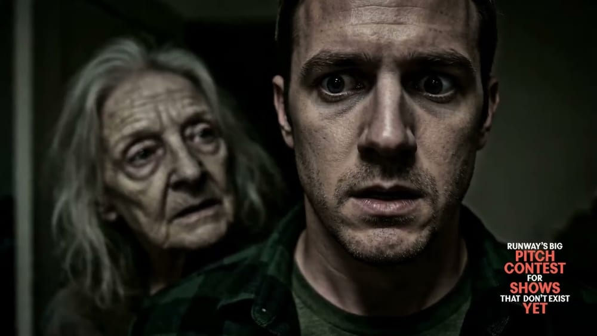
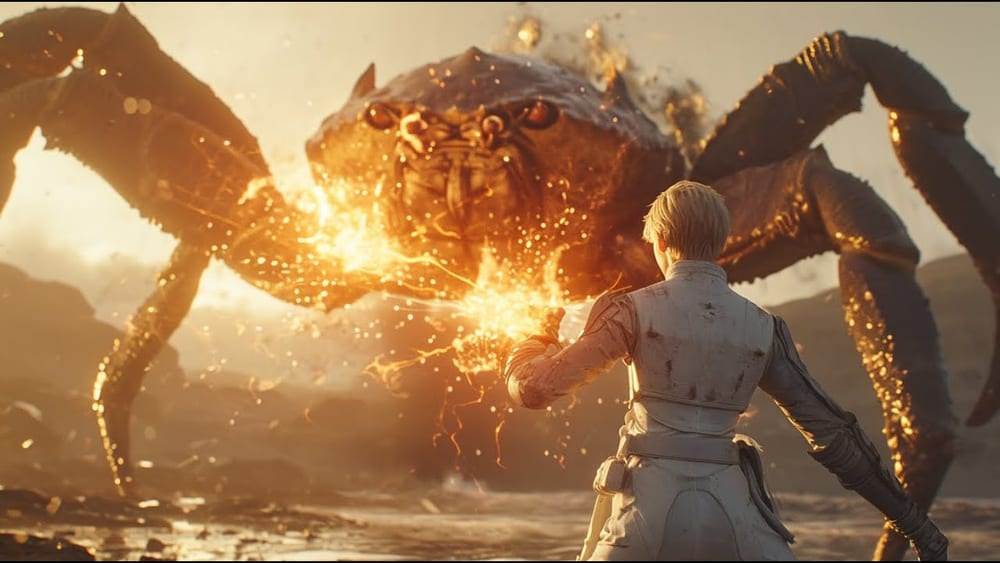
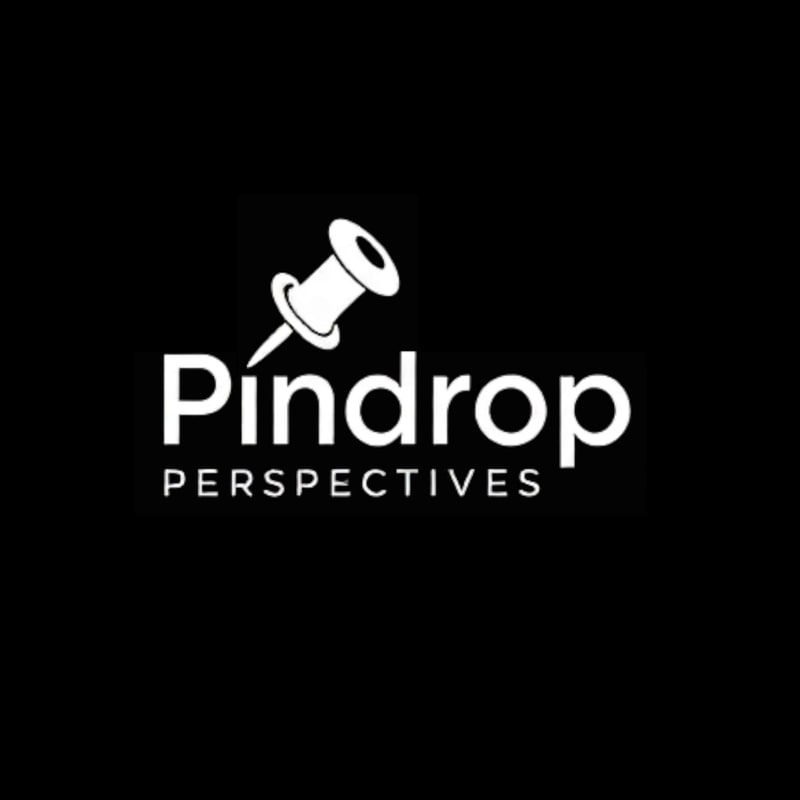
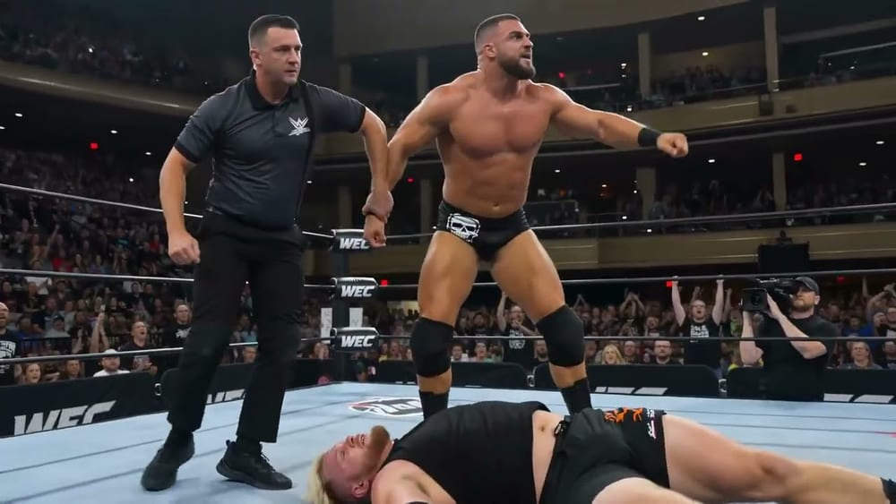

The Prophecy of Nightmares
Thomas Muller’s linked horror stories cut into a trailer for the anthology series they are waiting to become.
View project

A narrative series about the people and things the world has decided it does not want — written and directed by both founders.
UNWANTED is Pindrop’s flagship narrative series, written and directed by Eugene Mont and Thomas Muller. Across a teaser and a run of released episodes it follows characters pushed to the edge of the world that made them — soldiers, survivors, and machines that outlived their purpose.
The series is produced with AI-assisted tools under the pair’s direct creative control. Every story beat, cut, and line of dialogue is authored by its credited writer-directors; the tools shorten the distance between the script and the screen, never the decisions.
Watch
The YouTube player loads only when you press play.
Episodes

Thomas Muller’s linked horror stories cut into a trailer for the anthology series they are waiting to become.
View project

The founders’ own show — 32 episodes on screenwriting, filmmaking, and moving a story between formats.
View project

A pro-wrestling title match reduced to its most absurd essentials — written and directed by Eugene Mont.
View project